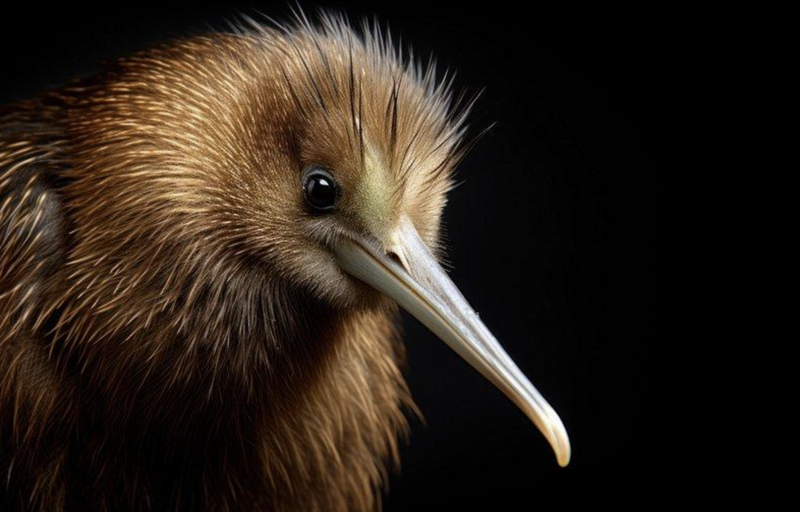
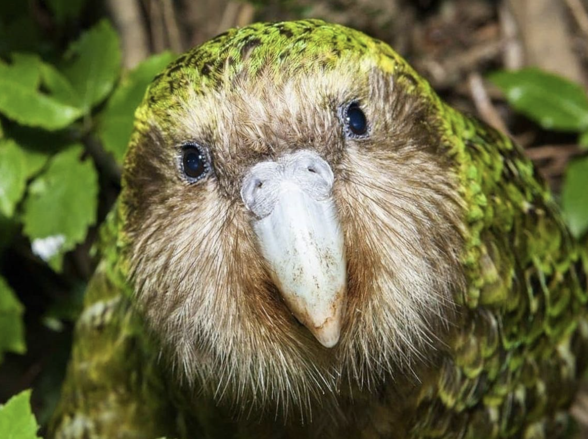
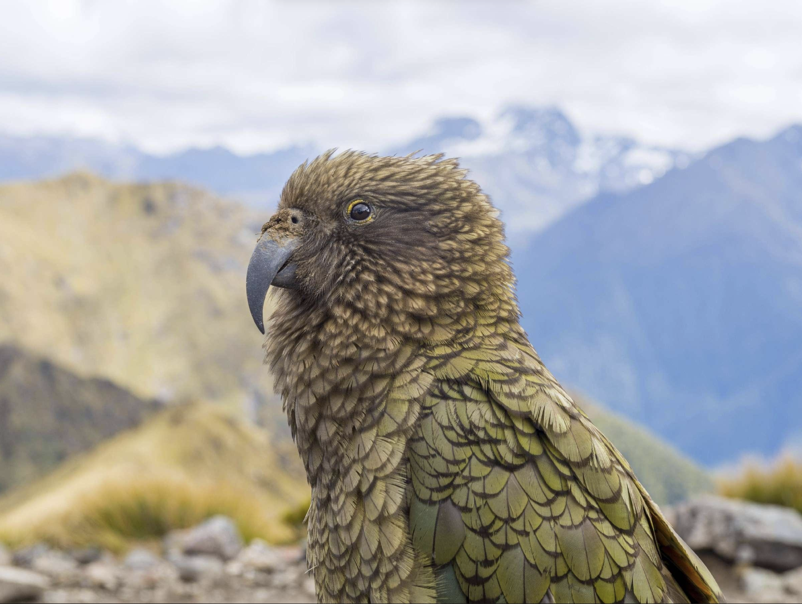

Welcome to Native Wildlife & Environment
In this website, you can explore the beauty of native wildlife and the environment. The site features information about various species and their habitats, as well as conservation efforts.
Feel free to navigate through the pages to learn more about the fascinating wildlife of New Zealand and how you can contribute to preserving it.
Explore Native WildlifeMeet Our Native Wildlife

Kiwi
The kiwi is a flightless bird and an iconic symbol of New Zealand.

Kākāpō
The kākāpō is a rare, flightless parrot native to New Zealand.

Kea
The kea is an intelligent parrot that lives in New Zealand's South Island mountains.
How Can You Help?
Everyone can help protect New Zealand's native wildlife. You can pick up rubbish, respect wildlife habitats, plant suitable native plants and learn about conservation.